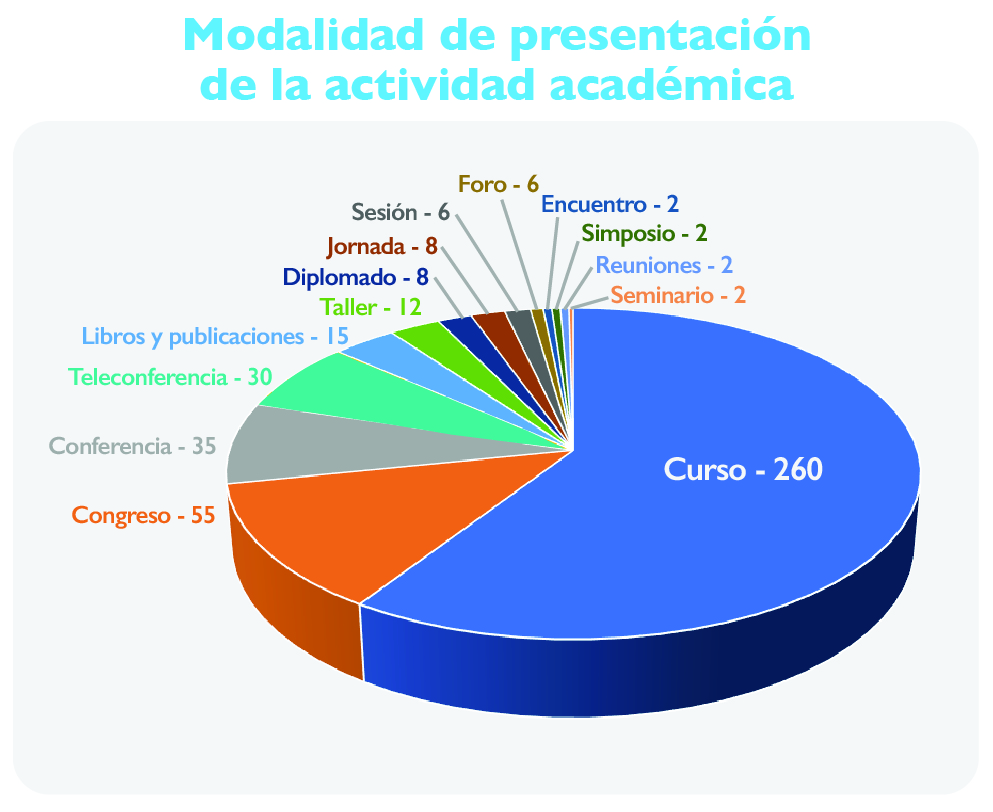
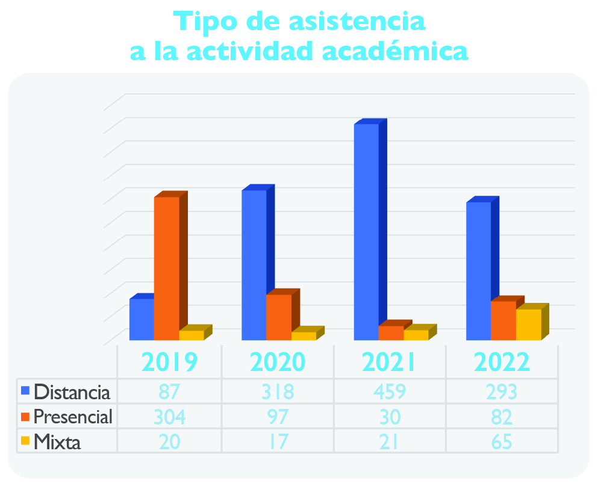
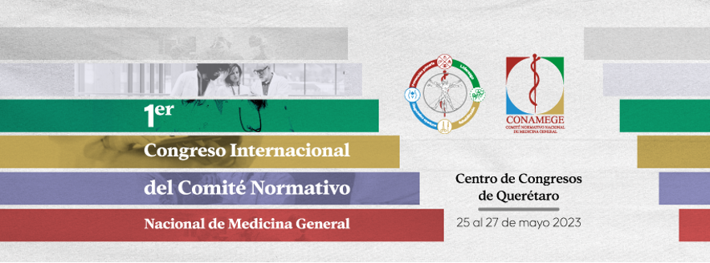

Dr. Adolfo Chávez Negrete
Presidente del Comité Normativo Nacional de Medicina General, A.C.
conamege@yahoo.com.mx
Dr. José Luis Olvera Gómez
Coordinador de Oficina del Comité Normativo
Nacional de Medicina General, A.C.
j.luis.olvera@conamege.com
Introducción
En seguimiento a la siguiente declaratoria de principio de la CONAMEGE A.C:
“El Comité Normativo Nacional de Medicina General tiene carácter permanente, multidisciplinario y representativo, pero autónomo de los organismos que lo constituyen e integran. La intervención independiente de este Comité otorga a todas las partes interesadas la seguridad y confianza en la operación del sistema y contribuye a la protección de quien solicita los servicios del médico general, garantizando que con su certificación cuenta con la preparación y capacidad para calificarse como tal, dado que la Medicina General es una disciplina académica que por sus características y su situación actual requiere de un abordaje específico”.1
Este Comité atendió durante el 2022 los siguientes rubros:
Certificación y Renovación de la Certificación de los médicos generales.
Registro de Actividades de Educación Médica Continua. Capacitación con valor curricular.
Primer Congreso Internacional del CONAMEGE, Convenios de colaboración.
Desarrollo respecto a la Renovación de Idoneidad del Consejo Nacional y Consejos Estatales
En cumplimiento al artículo 9 de los estatutos vigentes de CONAMEGE, de regular y vigilar que los Consejos que forman parte del Consejo Nacional de Certificación en Medicina General sean órganos competentes para la evaluación y certificación del médico general en su actualización y ejercicio profesional, los Consejos de las 32 entidades federativas del país actualmente cuentan con idoneidad vigente.2
Certificación y Renovación de la Certificación de los médicos generales
En el 2022, el Consejo Nacional de Certificación en Medicina General convocó a los médicos generales que ejercen su profesión a presentar el Examen Nacional de Certificación en Medicina General. A la fecha los médicos generales certificados por los 32 Consejos estatales ascienden a 21,497 y los médicos que han renovado su certificación son 15,917, dando en total 37414.
Registro y Renovación de Actividades de Educación Médica Continua
En la función del Subcomité de Educación Médica Continua2 de evaluar, calificar y, en su caso, otorgar los puntos correspondientes para médicos generales, alumnos y profesores participantes en dichas actividades, con la finalidad de actualizar en el conocimiento médico, se registró un total de 5,183 actividades, 276 renovaciones, 3,420 modalidad presencial, 1620 en modalidad a distancia y 143 mixtas; con un total de 11,996 actividades con y sin replicas.
En relación con la modalidad de presentación de la educación médica continua, en la siguiente gráfica se identifica que en primer lugar se encuentran los cursos (260), seguido de congresos (55), conferencias (35) y teleconferencias (30), así como libros y publicaciones (15).
Modalidad de presentación de la actividad académica
Si bien la pandemia de Covid-19 está en descenso, los cursos a distancia fueron los elegidos en primer lugar en 293 ocasiones, seguido por 82 en la variedad presencial y 65 mixtos.

Tipo de asistencia a la actividad académica
En cuanto a los proveedores de las actividades de educación, están en primer lugar con 132 las actividades programadas por las Sociedades Médicas, seguidas de los Promotores Comerciales con 79, otros con 60 y por la Industria Químico-farmacéutica con 55, Instituciones de salud con 16 e Instituciones de Educación Superior con 13. Durante el 2022 las Instituciones de Educación Superior programaron mayor cantidad de actividades con respecto al año pasado.
En relación con la temática atendida, se encuentra de la siguiente manera: 107 casos fue la Medicina General, Medicina Interna (46), Endocrinología (41), Ginecología y Obstetricia (38), Gastroenterología (27), Pediatría (23), Cardiología (22), Infectología (16) y Neumología (13), entre otros.
Convenios de colaboración
Para CONAMEGE el establecimiento de Convenios de Colaboración con las diversas sociedades médicas, universidades y organizaciones que promueven la actualización, la educación médica continua y la certificación de los médicos generales, fortalece la sinergia que facilita nuestra misión; recientemente se han establecido los siguientes convenios:
Centro de Estudios Superiores Tepeaca
Universidad Anáhuac campus Cancún
Colegio de Medicina Interna
Novartis “Coalición por el Corazón de México”
Medscape
Doc Red y Colegio Médico Colombiano
Colegio Mexicano de Ortopedia y Traumatología
Es un honor para este Comité organizar el 1er Congreso Internacional del Comité Normativo Nacional de Medicina General, A.C. 3 del 25 al 27 de mayo del 2023 a desarrollarse en la ciudad de Querétaro, Querétaro. Al que podrán asistir y participar los médicos generales de los diferentes estados del país.
Conclusión
Para el cierre de actividades del 2022, en conjunto con el Consejo Nacional de Certificación en Medicina General, A.C., se continuó avanzando en la trascendental actividad de certificación, con miras a que todo médico general tenga no solo conocimientos, sino habilidades y destreza, es decir, las competencias necesarias para atender a todo paciente que se acerque a consultarlo.
Para alcanzar esto es primordial que el médico en formación, o bien el que ya está ejerciendo su profesión en medicina general, tenga a su alcance la capacitación continua, que le permita resolver situaciones de la práctica médica cotidiana, por ello, los cursos de Educación Médica Continua que ofrece el CONAMEGE atienden las patologías más frecuentes que identificará en su quehacer cotidiano.
Para este 2023, además de la oferta académica diversificada de nuestra plataforma, el médico se encontrará personalmente e intercambiará experiencias con médicos de talla nacional e internacional que expondrán temas de actualidad en el 1er Congreso del Comité Normativo Nacional de Medicina General, A.C., que se realizará en la ciudad de Querétaro.
En resumen, un año de actividades no cierra un ciclo, al contrario, invita a un análisis de lo alcanzado y proyecta estándares cada vez más altos en favor de la Medicina General de nuestro país.
Invitación al 1er Congreso Internacional del Comité Normativo Nacional de Medicina General
Referencias bibliográficas
1. Comité Normativo Nacional de Medicina General, A.C. (CONAMEGE). Declaratoria de principios [online]. https://www.conamege.org.mx/index.php
2. Comité Normativo Nacional de Medicina General, A.C. (CONAMEGE). Estatutos del Subcomité de Educación Médica Continua. https://www.conamege.org.mx/estatutos.php
3. Comité Normativo Nacional de Medicina General, A.C. (CONAMEGE). Convocatoria del 1er Congreso Internacional del Comité Normativo Nacional de Medicina General [online]. Disponible en https://congresoconamege.com/ [15 febrero 2023]